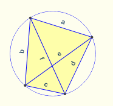

Recall that an inscribed (or 'cyclic') quadrilateral is one where the four vertices all lie on a circle. It turns out that there is a relationship between the sides of the quadrilateral and its diagonals. If you multiply the lengths of each pair of opposite sides, the sum of these products equals the product of the diagonals.
Formally: For a cyclic quadrilateral with sides a,b,c,d and diagonals e,f, then
In the figure above, drag any vertex around the circle. Note how the relationship holds.
* NOTE The lengths in the figure above are rounded to one decimal place for clarity. If you repeat the calculation on a calculator you may not therefore get an exact equality. The equation is meant only to illustrate how the theorem works.
In the figure above, if you drag a point past its neighbor the quadrilateral will become 'crossed' where one side crossed over another. In such 'crossed' quadrilaterals Ptolemy's Theorem no longer holds. (Most properties of polygons are invalid when the polygon is crossed).